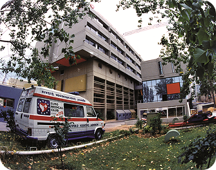

ΠΑΡΟΥΣΙΑΣΗ ΠΡΟΣ ΤΗ ΔΙΟΙΚΗΣΗ
Τρία ευρήματα.
Συγκεκριμένες
αποφάσεις.
Εμπειρία ασθενών · Ελληνικό · ΓΑΙΑ
6 λεπτά αυτόματης ροής + 3 στάσεις
Περίπου 8 λεπτά με σχόλια
Προετοιμασία των 15 σκηνών…

01 / 15
Έτοιμο